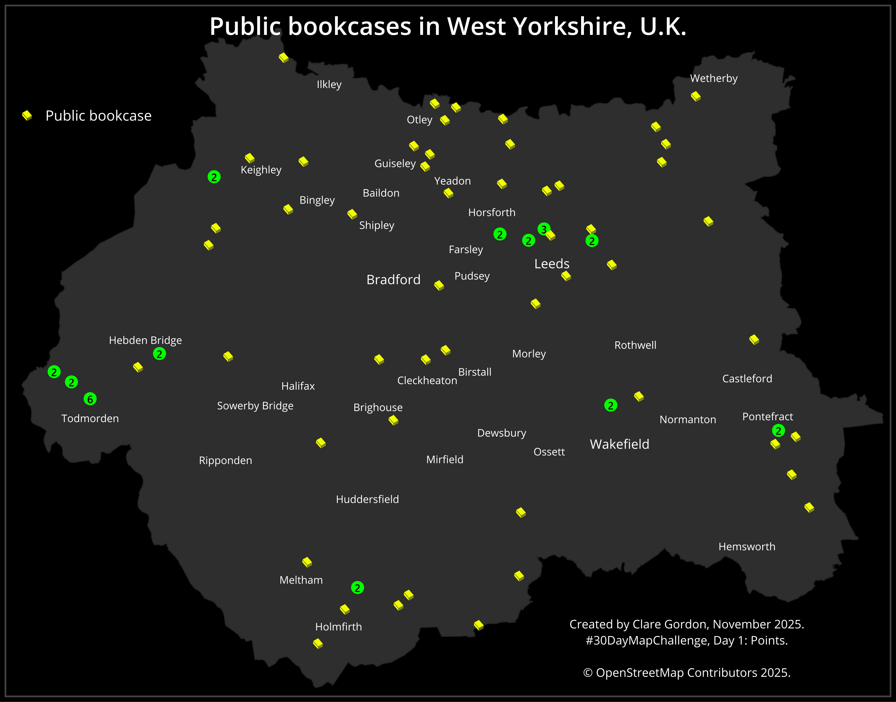

1st November 2025

To find out layers in osm.pbf file:
>>> gdal vector info -i west-yorkshire-251031.osm.pbf -f text`
Extract little libraries using sql. OSM tag is public_bookcase.
>>> gdal vector sql rawdata\west-yorkshire-251031.osm.pbf proc\WestYorkshire.gpkg --output-layer public_bookcase --sql="SELECT * FROM points WHERE other_tags LIKE '%public_bookcase%'"
Then reproject to British National Grid.
>>> gdal vector reproject --src-crs=EPSG:4326 --dst-crs=EPSG:27700 proc\WestYorkshire.gpkg --layer=public_bookcase --append proc\WestYorkshire.gpkg --output-layer=public_bookcase_27700
point cluster.OSMInfo plugin to download polygon for West Yorkshire. Styled polygon as dark grey.QuickOSM plugin to download Cities and Towns. Styled as labels with no point. Used Move a label tool to move some labels away from book symbols, then deleted some towns as too many on map.